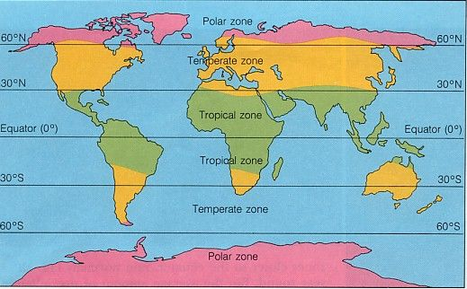

The Indonesian Language Defines Time by Sunlight
September 15, 2026
In many languages, there are distinct terms for the time before noon (such as a.m. in English) and the time after noon (p.m.). Similar distinctions exist in Japanese (午前 and 午後) or Chinese (上午 and 下午). However, in Indonesian, the closest equivalent for the hours before noon is pagi (morning), while the middle of the day is often represented by siang (roughly translated as midday or afternoon, though it is not a direct match).
Unlike a.m. and p.m., pagi and siang are not strict chronological markers. For example, 11:00 a.m. is no longer considered pagi, and many Indonesians would not even classify 10:00 a.m. as pagi. Similarly, while 2:00 p.m. is considered siang, 4:00 p.m. is no longer siang—it becomes sore. While these boundaries may seem arbitrary to outsiders, they largely correspond to sunlight intensity and ambient heat rather than fixed clock hours.
Because Indonesia lies entirely within the tropical zone 